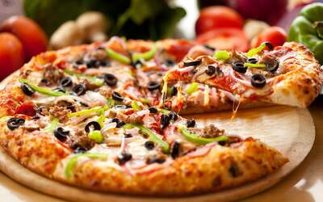

Pizza holds a special place for me because it brings so much comfort and joy. There's something about the warm, cheesy goodness combined with the crispy crust and tangy sauce that’s just irresistible. It's also the ultimate crowd-pleaser, whether it's a casual meal with friends or a family gathering. You can make it as simple or as complex as you want, and it works for any time of day—whether it's breakfast, lunch, dinner, or even a late-night snack! The endless combinations of toppings also make it a food that never gets boring. Every pizza is a new experience!
Pizza Facts
- Origin:
- Italy
- Popular Toppings:
- Pepperoni, Cheese, Mushrooms, Olives
- Best Drink Pairing:
- Beer or Lemonade
My Favorite Pizza Types
- Margherita
- Pepperoni
- BBQ Chicken
- Vegetarian
- Four Cheese